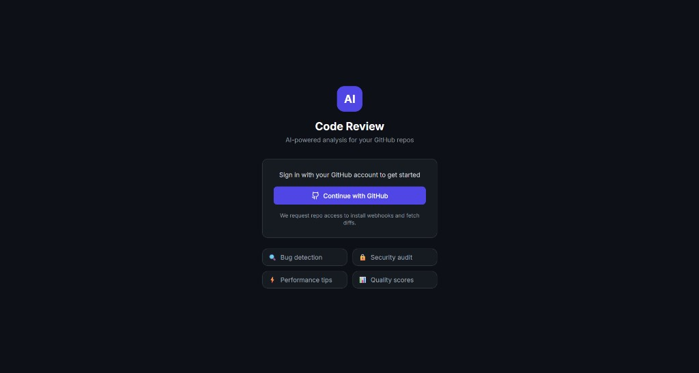
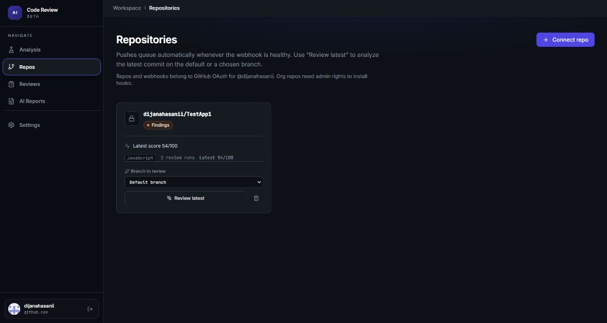
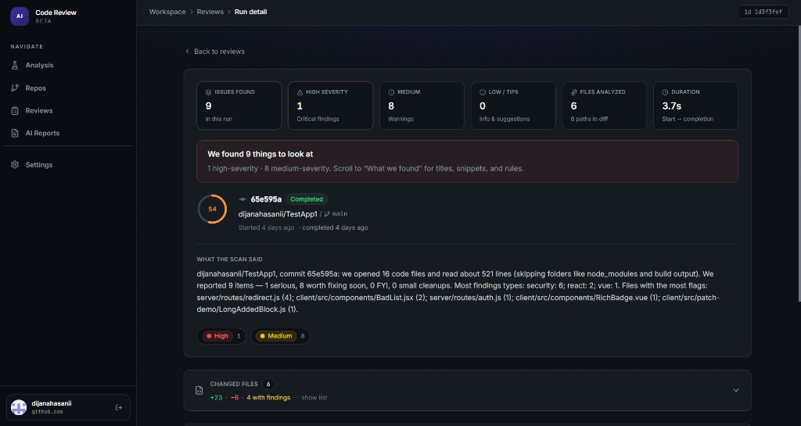

AI-Powered Code Review Assistant
An automated repository inspection platform featuring a Git snapshot rule analyzer, severity scoring algorithm, and a real-time developer dashboard powered by Socket.IO.

Overview
This is my Bachelor thesis project: an automated code review and repository inspection system that connects to GitHub via OAuth 2.0 and processes push events via webhooks. The current production engine executes a deterministic repository snapshot analyzer that traverses Git trees and runs weighted static checks across tracked files, with diff heuristic fallbacks.
I chose a static heuristic engine over continuous live LLM calls to ensure instant review run times, zero recurring API expenses, and repeatable results for developers. The pipeline architecture is intentionally structured with an extensible analysis interface, making live LLM analysis an easy drop-in provider when cost and product scope permit.
The Engineering Problem
Manual code reviews can bottleneck release cycles, while repetitive quality and security violations (unhandled async rejections, exposed credentials, lingering debug statements) easily slip through. Existing commercial tools either require complex infrastructure or run expensive third-party LLM queries on every single commit.
Architecture & Implementation
The system operates as an end-to-end full-stack pipeline:
- Ingestion: GitHub OAuth 2.0 for user authentication and repository access; webhook endpoints capture push events with HMAC signature verification.
- Job Processing: Modular queue worker supporting both fast in-process execution and Redis/Bull job queues for distributed workloads.
- Analysis Engine: Fetches Git trees and blobs, runs weighted static AST and regex rules across .js, .ts, and .vue files, and computes overall quality and reliability scores.
- Auto-Remediation: Targeted fix service (targetedFixService.js) that generates precise source patches (e.g. wrapping unhandled async blocks in try/catch, commenting console statements, annotating secrets).
- Persistence & Live Updates: Review runs and issue records are stored in Supabase (PostgreSQL), while progress events stream live to the React dashboard via Socket.IO.
My Role & Contributions
End-to-end ownership across frontend, backend, OAuth security, webhook pipelines, persistence modeling, real-time WebSockets, and production deployment on Render.
Screenshots


Key Challenges & Trade-offs
- Deterministic Analysis vs. LLM Cost: Balancing AI ambition with practical resource limits led to building a high-performance snapshot rule engine first, decoupling rule execution from the analysis interface.
- Precise Source Patching: Developing automated remediation logic that modifies only the exact implicated lines without corrupting surrounding AST structures or causing full-file rewrites.
- Asynchronous State Synchronization: Ensuring WebSocket broadcasts accurately reflect queue worker status across network re-connections.
Results & Future Development
Successfully deployed on Render with complete GitHub OAuth, live webhook ingestion, real-time dashboard updates, and automated remediation. Future iterations can plug in language model providers for contextual suggestions and automated pull request comments.